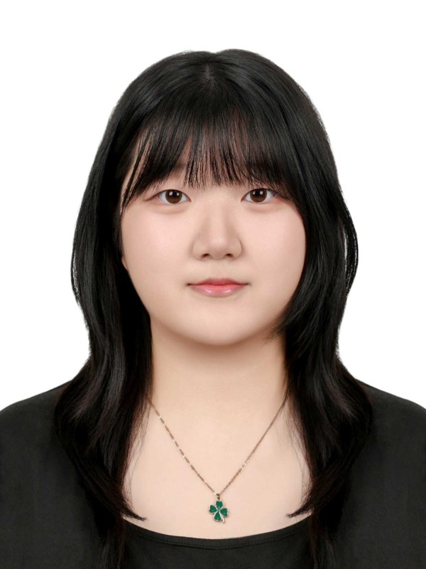
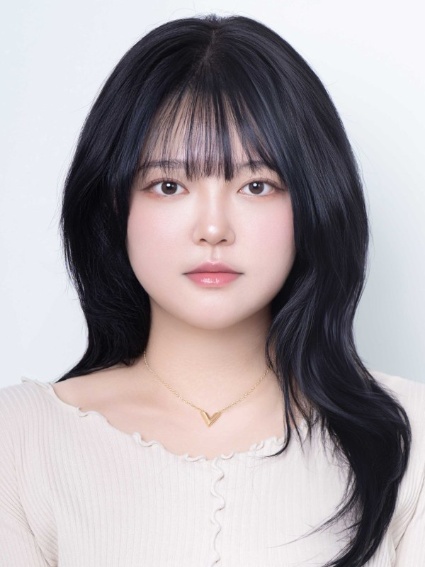
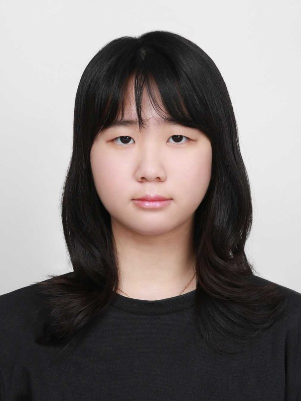
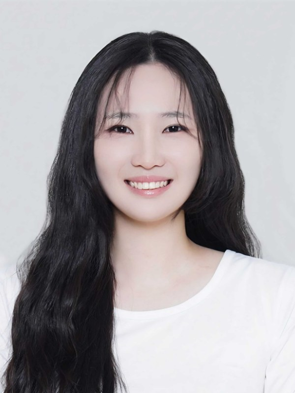
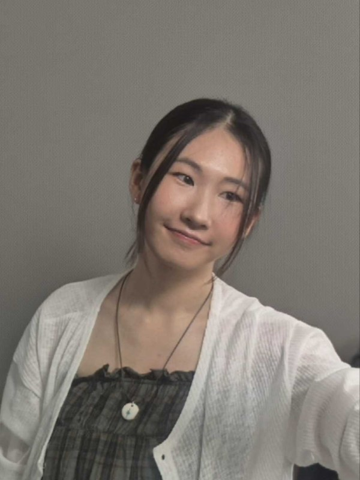

Head of Department · 专业主任教授

PROFESSOR · HEAD
Hee Seon KimAssociate Professor
情感游戏计算原型实验室
RESEARCH情感游戏计算、玩家体验、动画与互动媒体
OFFICE802馆303室
heeseonkim@cau.ac.kr
Faculty & Lecturers · 教师与讲师
9 PEOPLE · 按韩文字母顺序
Min Seok Kim
预可视化建模与绑定
RESEARCH2D/3D 混合动画、3D 游戏引擎

Kim Ji Hyeon
构思与表现视觉叙事
RESEARCH动画导演
Kim Changmin
构思与表现电影化视觉
RESEARCHUnreal 及游戏引擎

Seung Ji Na
游戏设计
RESEARCH游戏内容、游戏叙事

Ho Won Nah
想象与表现案例研究项目打磨
RESEARCH动画理论、制作、评论

Il Min Shin
动画融合制作实习
RESEARCH动画

Won Seok Shin
游戏界面角色创作
RESEARCH新媒体界面

Yun Jung Lee
现场速写
RESEARCH传统文化认知、文化遗产保护

Se-A Choi
叙事设计
RESEARCH故事创作
Student Council · 2026年学生会干部
6 PEOPLEPark Junyun
会长

Min Yuju
副会长

Kim Chaerin
四年级代表

Son Yejin
三年级代表

Yoon Yeojin
二年级代表

Jang Mingyeong
一年级代表